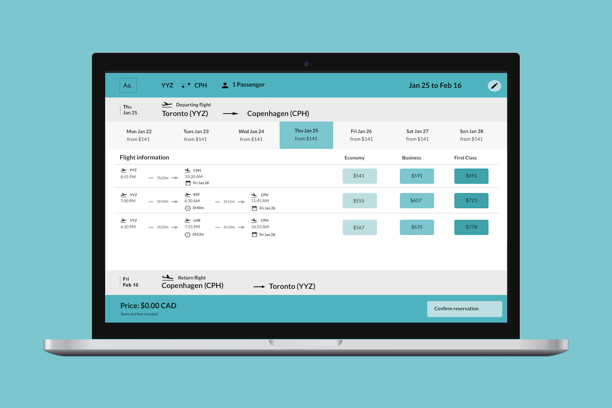

Smooth Journey: Flight selection UX

Problem
As a frequent flier, I’ve purchased flights from many different airlines — all with a different user experience ranging from frustrating to fantastic. To make it more complicated, I often switch from mobile to desktop and so forth when researching flight details. Different UIs have frustrated me and I wanted a fluid web experience as
most people who book travel on mobile book through web.
Research
To better understand the flight booking process, I conducted competitor analysis with 5 airlines (WOW Air, Norwegian, Delta, Virgin, and Porter) and 3 flight booking websites (Google Flights, Kayak, Skyscanner). I went through the process of booking flights looking for pain points in the process and areas for improvement.
An example of a common flight booking UI
Through my research, I learned of the importance of information and relevant information to users. Overwhelming users with too much information like entertainment options and seat maps makes it harder for users to scan your website. I also learned about the importance of buttons like drop down menus, radio buttons, and optimal button designs for user experience. Consistent design and familiar interaction patterns help create a more efficient and enjoyable experience! Combining some of the best elements of different airline websites I used, I created my own responsive web flight selection process.
Design
My priority in creating this design was minimizing cognitive load for users. I narrowed down relevant information after consulting with users to what is displayed on the screen now. Users expressed that their informational priorities were dates, flight times (including layover times), and prices.
Booking departure and returning flight
Typography is central to the design of this website because it is predominately text-based. I went with the Lato family of fonts in black for their visual clarity, and modern curvature. I also used Material Design icons to convey and reiterate important concepts like departure and landing times.
I used negative space as a contrast to colour in order to demonstrate relevant information like flight times. Colour was used to denote things of secondary importance such as pre-selected information and buttons. Tempered hues of blue were used as a way to create a friendly yet professional personality through colour.
Confirmation for departure and returning flights
Reflection
This was my first project in looking at visual identity and clarity through responsive web UX. Aiming for pixel perfection isn’t just an artist’s job — it’s how designers can help users understand the journey through a product. Try out the
interactive prototype for yourself!
Thank you for reading!